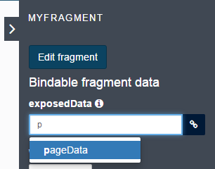

Fragments
Note: For Bonita Enterprise, Performance, Efficiency, and Teamwork editions only.
A fragment is a piece of a page, form or layout, composed of one or more widgets and/or containers. It can be inserted in other pages.
A fragment has its own widget configurations and data, but can also expose data to the pages that include it.
Fragments are available in the Bonita Enterprise, Performance, Efficiency, and Teamwork editions.
Fragment editor
The editor used to create or update a fragment is the same as the Page editor. Create and update fragments in the same way you create and update a page.
Create a fragment
You can create a fragment from scratch in the UI Designer home page.
- Click on the generic Create button.
- Choose the type Fragment
- Type a fragment name
- Click on the Create button to confirm
- The fragment editor opens.
You can also convert a plain container used in a page, a form, a layout or a fragment into a fragment:
- Select the container in the page editor.
- Click the link Save as fragment in the properties panel.
- Specify a name.
- Click the Save button.
- The Fragment editor opens.
Update a fragment
Fragments are listed in the Fragments tab of the UI Designer home page. Click the name of a fragment to open it in the Fragment editor.
You can also update a fragment in the page editor when you are editing a page, form or layout that uses the fragment. Select the fragment in the Page editor and click the Edit fragment button. The changes you make to the fragment are applied everywhere the fragment is used, not just the page you are currently editing.
Variables and fragments
A fragment has its own variables, but can also expose variables to the pages that include it.
When you add a variable to a fragment, specify whether the variable will be exposed in the pages, forms or layouts using this fragment.
- If a fragment variable is not exposed, the variable data is specific to the fragment.
- If a fragment variable is exposed, it can be bound to a variable of the page, layout or fragment that embeds the fragment.
For example, take a fragment called “MyFragment”. This fragment has two variables, one exposed (exposedVariable) and the other not (notExposedVariable). When you add this fragment to a page in the Page editor, you can bind the exposedVariable with a variable defined in the page.

At runtime, when fragment and page variables are bound, data changes can be made in either the page or the fragment.
If several fragments expose a variable and these variables are linked to the same page variable, if you change the variable in the page, or in one of the fragments, the change is made in all the fragments.
Export a fragment
You can export a fragment from the UI Designer home page. The fragment is exported as a zip file that contains the following:
- an HTML page
- a resources folder containing
- CSS files
- JavaScript dependencies
- Widget files used by the fragment (a widget is an Angular JS directive)
- any sub-fragments that are used
You can use the HTML page as it is. You can also update the code outside the UI Designer. However, if you make changes that are not compatible with the UI Designer, you will not be able to import the fragment back into the UI Designer.
Import a fragment
You can import a fragment that has been created in the UI Designer into the same or another UI Designer. The format of the imported zip file must be the same than the zip file created during an export, and no modification should have been made to the html, CSS, or JavaScript codes.